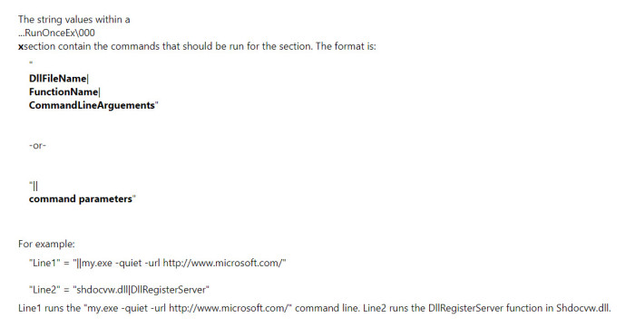
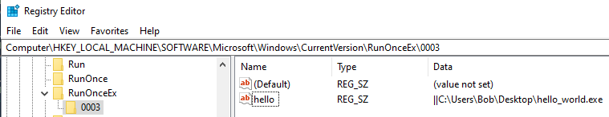
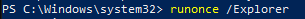
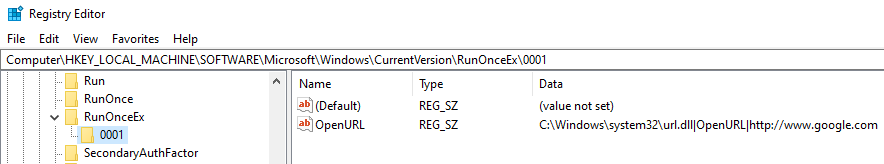
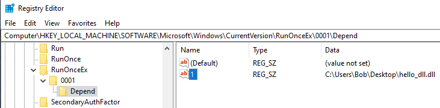
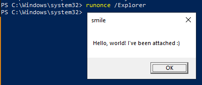

# RunOnceEx
•
https://support.microsoft.com/en-gb/help/232487/description-of-the-runonceex-registry-key•
https://oddvar.moe/2018/03/21/persistence-using-runonceex-hidden-from-autoruns-exe/ - All credit goes here
•
http://greatis.com/webhelp/regrun___detailed_instructions/start_control/runex_key.htm - documentation
RunOnceEx is available on Windows Vista and newere, but is not created by default
HKEY_LOCAL_MACHINE\Software\Microsoft\Windows\CurrentVersion\RunOnceEx
RunOnceEx only executes for Administrators.
The
Run and
RunOnce registry keys create separate processes
The
RunOnceEx registry key does not create a separate processes.
RunOnceEx supports a dependency list of DLLs that remain loaded while the sections are being processed.
If an exception occurs while calling a function in a DLL, the exception is caught and an error dialog box is displayed to the user. You can suppress this error dialog box by using a flag in the RunOnceEx registry key.
Documentation (now removed from MSDN) looks like this:
## Run an executable
To run an executable, you write to the registry with the data:
||C:\Users\Bob\Desktop\hello_world.exeHere's a powershell command that makes use of
` to escape
"reg add "HKLM\SOFTWARE\Microsoft\Windows\CurrentVersion\RunOnceEx\0003" /v "hello" /t REG_SZ /d "||C:\Users\Bob\Desktop\hello_world.exe" /fThe specified executable will now run on system startup after a reboot.
Because this is a
RunOnce key, the registry will be deleted when it's run.
Alternatively, you can run the
RunOnce key now with:
runonce /Explrorer## Run function from a DLL
You can run DLLs similar to how you run an executable.
The data should be:
"C:\Windows\system32\dll.dll|Function|parameters"C:\Windows\system32\url.dll|OpenURL|"http://www.google.com"Here's a powershell command that uses
` to escape the
" quotes
reg add HKLM\SOFTWARE\Microsoft\Windows\CurrentVersion\RunOnceEx\0001 /v "OpenURL" /d "C:\Windows\system32\url.dll|OpenURL|`"http://www.google.com`""According to oddvar, the DLL you choose must be registered.
## Load DLL as Dependency
Using
RunOnceEx's
Depend key, you can define a DLL to be loaded as a dependency.
This DLL doesn't have to be signed.
reg add HKLM\SOFTWARE\Microsoft\Windows\CurrentVersion\RunOnceEx\0001\Depend /v 1 /d "C:\Users\Bob\Desktop\hello_dll.dll"